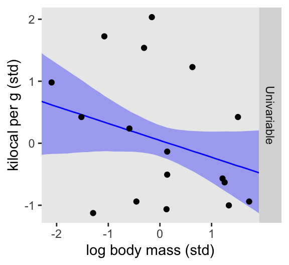
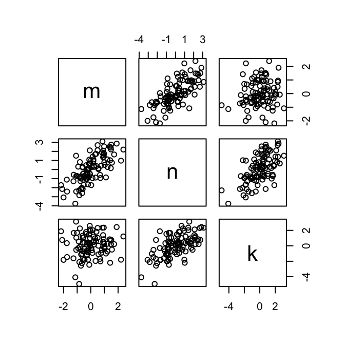
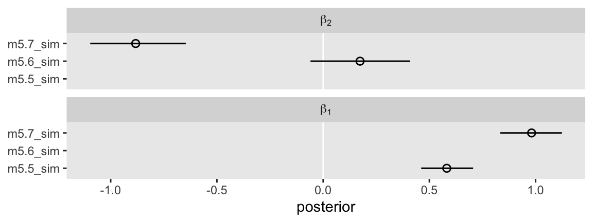

# Load
library(tidyverse)
library(tidybayes)
library(rstan)
library(patchwork)
library(posterior)
library(tigris)
library(ggdag)
library(dagitty)
# Drop grid lines
theme_set(
theme_gray() +
theme(panel.grid = element_blank())
)5 The Many Variables & The Spurious Waffles
Load the packages.
5.0.0.1 Rethinking: Causal inference.
5.1 Spurious associations
Load the Waffle House data.
data(WaffleDivorce, package = "rethinking")
d <- WaffleDivorce
rm(WaffleDivorce)Now standardize the focal variables with the rethinking::standardize() function.
d <- d |>
mutate(d = rethinking::standardize(Divorce),
m = rethinking::standardize(Marriage),
a = rethinking::standardize(MedianAgeMarriage))Investigate the data.
glimpse(d)Rows: 50
Columns: 16
$ Location <fct> Alabama, Alaska, Arizona, Arkansas, California, Colo…
$ Loc <fct> AL, AK, AZ, AR, CA, CO, CT, DE, DC, FL, GA, HI, ID, …
$ Population <dbl> 4.78, 0.71, 6.33, 2.92, 37.25, 5.03, 3.57, 0.90, 0.6…
$ MedianAgeMarriage <dbl> 25.3, 25.2, 25.8, 24.3, 26.8, 25.7, 27.6, 26.6, 29.7…
$ Marriage <dbl> 20.2, 26.0, 20.3, 26.4, 19.1, 23.5, 17.1, 23.1, 17.7…
$ Marriage.SE <dbl> 1.27, 2.93, 0.98, 1.70, 0.39, 1.24, 1.06, 2.89, 2.53…
$ Divorce <dbl> 12.7, 12.5, 10.8, 13.5, 8.0, 11.6, 6.7, 8.9, 6.3, 8.…
$ Divorce.SE <dbl> 0.79, 2.05, 0.74, 1.22, 0.24, 0.94, 0.77, 1.39, 1.89…
$ WaffleHouses <int> 128, 0, 18, 41, 0, 11, 0, 3, 0, 133, 381, 0, 0, 2, 1…
$ South <int> 1, 0, 0, 1, 0, 0, 0, 0, 0, 1, 1, 0, 0, 0, 0, 0, 0, 1…
$ Slaves1860 <int> 435080, 0, 0, 111115, 0, 0, 0, 1798, 0, 61745, 46219…
$ Population1860 <int> 964201, 0, 0, 435450, 379994, 34277, 460147, 112216,…
$ PropSlaves1860 <dbl> 4.5e-01, 0.0e+00, 0.0e+00, 2.6e-01, 0.0e+00, 0.0e+00…
$ d <dbl> 1.6542053, 1.5443643, 0.6107159, 2.0935693, -0.92705…
$ m <dbl> 0.02264406, 1.54980162, 0.04897436, 1.65512283, -0.2…
$ a <dbl> -0.6062895, -0.6866993, -0.2042408, -1.4103870, 0.59…Now we have our data, we can reproduce Figure 5.1.
d |>
ggplot(aes(x = WaffleHouses/Population, y = Divorce)) +
stat_smooth(method = "lm", formula = 'y ~ x', fullrange = TRUE,
alpha = 1/5, linewidth = 1/2) +
geom_point(alpha = 1/2, size = 1.5) +
geom_text(data = d |>
filter(Loc %in% c("ME", "OK", "AR", "AL", "GA", "SC", "NJ")),
aes(label = Loc),
hjust = -0.2, size = 3, vjust = -0.4) +
scale_x_continuous("Waffle Houses per million", limits = c(0, 55)) +
ylab("Divorce rate") +
coord_cartesian(xlim = c(0, 50), ylim = c(5, 15))
Since these are geographically-based data, we might plot our three major variables in a map format. The tigris package (Walker, 2022) provides functions for retrieving latitude and longitude data for the 50 states and we can plot then with the ggplot2::geom_sf() function. We’ll use the right_join() function to combine those data with our primary data d.
# Get the map data
d_states <- states(cb = TRUE, resolution = "20m") |>
shift_geometry() |>
# Add the primary data
right_join(d |>
mutate(NAME = Location |> as.character()) |>
select(d:a, NAME),
by = "NAME") |>
# Convert to the long format for faceting
pivot_longer(cols = c("d", "m", "a"), names_to = "variable")Now plot.
d_states |>
ggplot() +
geom_sf(aes(fill = value, geometry = geometry),
size = 0) +
scale_fill_gradient(low = "lightblue", high = "blue4", breaks = NULL) +
theme_void() +
theme(strip.text = element_text(margin = margin(0, 0, .5, 0))) +
facet_wrap(~ variable, labeller = label_both) Here’s the standard deviation for MedianAgeMarriage in its current metric.
sd(d$MedianAgeMarriage)[1] 1.24363Our first statistical model follows the form
\[ \begin{align*} \text{divorce-std}_i & \sim \operatorname{Normal}(\mu_i, \sigma) \\ \mu_i & = \alpha + \beta_1 \text{median-age-at-marriage-std}_i \\ \alpha & \sim \operatorname{Normal}(0, 0.2) \\ \beta_1 & \sim \operatorname{Normal}(0, 0.5) \\ \sigma & \sim \operatorname{Exponential}(1), \end{align*} \]
where the “std” suffix indicates the variables are standardized (i.e., zero centered, with a standard deviation of one).
First, we define the model_code_5.1.
model_code_5.1 <- '
data {
int<lower=1> n;
vector[n] d;
vector[n] a;
}
parameters {
real b0;
real b2; // Planning ahead for m5.3, we call this parameter b2
real<lower=0> sigma;
}
model {
vector[n] mu;
mu = b0 + b2 * a;
d ~ normal(mu, sigma);
b0 ~ normal(0, 0.2);
b2 ~ normal(0, 0.5);
sigma ~ exponential(1);
}
generated quantities {
// To be discusssed in Chapter 7
vector[n] log_lik;
for (i in 1:n) log_lik[i] = normal_lpdf(d[i] | b0 + b2 * a[i], sigma);
}
'You may have noticed we have an exciting new generated quantities with some mysterious code defining log_lik. We’ll have similar code for the next two models, but we won’t be ready to discuss those bits until later in Section 7.2.4 and Section 7.5.2. For now, just let the tension build.
Make the stan_data with the compose_data() function.
stan_data <- d |>
select(d, a) |>
compose_data()
# What?
str(stan_data)List of 3
$ d: num [1:50(1d)] 1.654 1.544 0.611 2.094 -0.927 ...
..- attr(*, "scaled:center")= num 9.69
..- attr(*, "scaled:scale")= num 1.82
$ a: num [1:50(1d)] -0.606 -0.687 -0.204 -1.41 0.6 ...
..- attr(*, "scaled:center")= num 26.1
..- attr(*, "scaled:scale")= num 1.24
$ n: int 50Fit the model with stan().
m5.1 <- stan(
data = stan_data,
model_code = model_code_5.1,
cores = 4, seed = 5)There are two basic ways to sample from the priors using stan(), which Michael Betancourt explained in this thread in the Stan forums. The first is to fit a single model with an if statement that turns the likelihood on an off, as needed. The second is the fit two separate models: one for just the prior, and the other for the posterior. We’ll do the second. Here it is in bulk.
model_code_5.1_prior <- '
data {
int<lower=1> n;
vector[n] d;
vector[n] a;
}
parameters {
real b0;
real b2;
real<lower=0> sigma;
}
model {
// The model only contains the prior
b0 ~ normal(0, 0.2);
b2 ~ normal(0, 0.5);
sigma ~ exponential(1);
}
'
m5.1_prior <- stan(
data = stan_data,
model_code = model_code_5.1_prior,
cores = 4, seed = 5)Here are the samples from m5.1_prior in a half-eye plot.
as_draws_df(m5.1_prior) |>
pivot_longer(b0:sigma) |>
mutate(name = case_when(
name == "b0" ~ "b[0]",
name == "b2" ~ "b[2]",
name == "sigma" ~ "sigma"
)) |>
ggplot(aes(x = value, y = name)) +
stat_halfeye(point_interval = mean_qi, .width = 0.89) +
scale_y_discrete(NULL, labels = ggplot2:::parse_safe, expand = expansion(mult = 0.1)) +
xlab("prior") +
coord_cartesian(xlim = c(-1, 5))Here’s Figure 5.3.
set.seed(5)
as_draws_df(m5.1_prior) |>
slice_sample(n = 50) |>
ggplot() +
geom_abline(aes(intercept = b0, slope = b2, group = .draw),
alpha = 3/4, linewidth = 1/4) +
scale_x_continuous("Median age marriage (std)", limits = c(-2, 2)) +
scale_y_continuous("Divorce rate (std)", limits = c(-2, 2))Here’s the right panel of Figure 5.2.
p2 <- as_draws_df(m5.1) |>
expand_grid(a = seq(from = min(d$a), to = max(d$a), length.out = 30)) |>
mutate(mu = b0 + b2 * a) |>
ggplot(aes(x = a)) +
stat_lineribbon(aes(y = mu),
.width = 0.89, color = "blue", fill = alpha("blue", 1/3)) +
geom_point(data = d,
aes(y = d),
size = 2/3) +
labs(x = "Median age marriage (std)",
y = "Divorce rate (std)")
p2To make the other panel of the figure, first we need to fit m5.2.
# Define the new model code
model_code_5.2 <- '
data {
int<lower=1> n;
vector[n] m;
vector[n] d;
}
parameters {
real b0;
real b1;
real<lower=0> sigma;
}
model {
// This time we use the more compact notation
d ~ normal(b0 + b1 * m, sigma);
b0 ~ normal(0, 0.2);
b1 ~ normal(0, 0.5);
sigma ~ exponential(1);
}
generated quantities {
// To be discusssed in Chapter 7
vector[n] log_lik;
for (i in 1:n) log_lik[i] = normal_lpdf(d[i] | b0 + b1 * m[i], sigma);
}
'
# Update `stan_data`
stan_data <- d |>
select(d, a, m) |>
compose_data()
# Compile and sample
m5.2 <- stan(
data = stan_data,
model_code = model_code_5.2,
cores = 4, seed = 5)Check the summary.
print(m5.2, pars = c("b0", "b1", "sigma"), probs = c(0.055, 0.945))Inference for Stan model: anon_model.
4 chains, each with iter=2000; warmup=1000; thin=1;
post-warmup draws per chain=1000, total post-warmup draws=4000.
mean se_mean sd 5.5% 94.5% n_eff Rhat
b0 0.00 0 0.11 -0.19 0.18 4148 1
b1 0.35 0 0.13 0.13 0.56 3901 1
sigma 0.95 0 0.10 0.81 1.12 3418 1
Samples were drawn using NUTS(diag_e) at Fri Aug 2 12:46:11 2024.
For each parameter, n_eff is a crude measure of effective sample size,
and Rhat is the potential scale reduction factor on split chains (at
convergence, Rhat=1).Here’s the rest of Figure 5.2.
p1 <- as_draws_df(m5.2) |>
expand_grid(m = seq(from = min(d$m), to = max(d$m), length.out = 30)) |>
mutate(mu = b0 + b1 * m) |>
ggplot(aes(x = m)) +
stat_lineribbon(aes(y = mu),
.width = 0.89, color = "blue", fill = alpha("blue", 1/3)) +
geom_point(data = d,
aes(y = d),
size = 2/3) +
labs(x = "Marriage rate (std)",
y = "Divorce rate (std)")
# Combine
p1 | (p2 + scale_y_continuous(NULL, breaks = NULL))5.1.1 Think before you regress.
If all you want is a quick and dirty DAG for our three variables, you might execute something like this.
set.seed(5)
dagify(M ~ A,
D ~ A + M) |>
ggdag(node_size = 8)We can pretty it up a little, too.
dag_coords <- tibble(
name = c("A", "M", "D"),
x = c(1, 3, 2),
y = c(2, 2, 1))
p1 <- dagify(
M ~ A,
D ~ A + M,
coords = dag_coords) |>
ggplot(aes(x = x, y = y, xend = xend, yend = yend)) +
geom_dag_point(alpha = 1/4, size = 10) +
geom_dag_text() +
geom_dag_edges() +
scale_x_continuous(NULL, breaks = NULL, expand = c(0.1, 0.1)) +
scale_y_continuous(NULL, breaks = NULL, expand = c(0.2, 0.2)) +
theme_dag()
p1
Considering alternative models, “It could be that the association between \(M\) and \(D\) arises entirely from \(A\)’s influence on both \(M\) and \(D\). Like this:” (p. 129)
p2 <- dagify(
M ~ A,
D ~ A,
coords = dag_coords) |>
ggplot(aes(x = x, y = y, xend = xend, yend = yend)) +
geom_dag_point(alpha = 1/4, size = 10) +
geom_dag_text() +
geom_dag_edges() +
scale_x_continuous(NULL, breaks = NULL, expand = c(0.1, 0.1)) +
scale_y_continuous(NULL, breaks = NULL, expand = c(0.2, 0.2)) +
theme_dag()
p1 | p25.1.1.1 Rethinking: What’s a cause?
5.1.1.2 Overthinking: Drawing a DAG.
5.1.2 Testable implications.
5.1.3 Multiple regression notation.
We can write the statistical formula for our first multivariable model as
\[ \begin{align*} \text{Divorce-std}_i & \sim \operatorname{Normal}(\mu_i, \sigma) \\ \mu_i & = \alpha + \beta_1 \text{Marriage-std}_i + \beta_2 \text{MedianAgeMarriage-std}_i \\ \alpha & \sim \operatorname{Normal}(0, 0.2) \\ \beta_1 & \sim \operatorname{Normal}(0, 0.5) \\ \beta_2 & \sim \operatorname{Normal}(0, 0.5) \\ \sigma & \sim \operatorname{Exponential}(1). \end{align*} \]
5.1.3.1 Overthinking: Compact notation and the design matrix.
Often, linear models are written using a compact form like:
\[ \mu_i = \alpha + \sum_{j=1}^n \beta_j x_{ji} \]
where \(j\) is an index over predictor variables and \(n\) is the number of predictor variables. This may be read as the mean is modeled as the sum of an intercept and an additive combination of the products of parameters and predictors. Even more compactly, using matrix notation:
\[ \mathbf{m} = \mathbf{Xb} \]
where \(\mathbf{m}\) is a vector of predicted means, one for each row in the data, \(\mathbf{b}\) is a (column) vector of parameters, one for each predictor variable, and \(\mathbf{X}\) is a matrix. This matrix is called a design matrix. (p. 132, emphasis in the original)
I generally do not like this style of notation, and I rarely use it. It’s not common to see it in papers in my field, and I suspect it many of my colleagues would find it actively discouraging. However, this style of notation will come in handy for some of the stan() code to come, starting with the models in Section 6.3.2.1.
5.1.4 Approximating the posterior.
Define model_code_5.3.
model_code_5.3 <- '
data {
int<lower=1> n;
vector[n] d;
vector[n] m;
vector[n] a;
}
parameters {
real b0;
real b1;
real b2;
real<lower=0> sigma;
}
model {
vector[n] mu;
mu = b0 + b1 * m + b2 * a;
d ~ normal(mu, sigma);
b0 ~ normal(0, 0.2);
b1 ~ normal(0, 0.5);
b2 ~ normal(0, 0.5);
sigma ~ exponential(1);
}
generated quantities {
// To be discusssed in Chapter 7
vector[n] log_lik;
for (i in 1:n) log_lik[i] = normal_lpdf(d[i] | b0 + b1 * m[i] + b2 * a[i], sigma);
}
'The stan_data list already has all we need.
str(stan_data)List of 3
$ d: num [1:50(1d)] 1.654 1.544 0.611 2.094 -0.927 ...
..- attr(*, "scaled:center")= num 9.69
..- attr(*, "scaled:scale")= num 1.82
$ a: num [1:50(1d)] -0.606 -0.687 -0.204 -1.41 0.6 ...
..- attr(*, "scaled:center")= num 26.1
..- attr(*, "scaled:scale")= num 1.24
$ n: int 50Fit the model with stan().
m5.3 <- stan(
data = stan_data,
model_code = model_code_5.3,
cores = 4, seed = 5)Behold the summary.
print(m5.3, pars = c("b0", "b1", "b2", "sigma"), probs = c(0.055, 0.945))Inference for Stan model: anon_model.
4 chains, each with iter=2000; warmup=1000; thin=1;
post-warmup draws per chain=1000, total post-warmup draws=4000.
mean se_mean sd 5.5% 94.5% n_eff Rhat
b0 0.00 0 0.10 -0.16 0.17 3594 1
b1 -0.06 0 0.16 -0.31 0.20 2939 1
b2 -0.60 0 0.16 -0.85 -0.35 2997 1
sigma 0.83 0 0.09 0.70 0.97 3434 1
Samples were drawn using NUTS(diag_e) at Fri Aug 2 12:47:48 2024.
For each parameter, n_eff is a crude measure of effective sample size,
and Rhat is the potential scale reduction factor on split chains (at
convergence, Rhat=1).Here’s a variant of McElreath’s rethinking::coeftab() plot (p. 133).
bind_rows(
as_draws_df(m5.1) |> mutate(model = "m5.1"),
as_draws_df(m5.2) |> mutate(model = "m5.2"),
as_draws_df(m5.3) |> mutate(model = "m5.3")
) |>
pivot_longer(starts_with("b")) |>
filter(name != "b0") |>
drop_na(value) |>
mutate(name = case_when(
name == "b1" ~ "beta[1]",
name == "b2" ~ "beta[2]"
) |> factor(levels = c("beta[2]", "beta[1]"))) |>
ggplot(aes(x = value, y = model)) +
geom_vline(xintercept = 0, color = "white") +
stat_pointinterval(.width = 0.89) +
labs(x = "posterior",
y = NULL) +
facet_wrap(~ name, labeller = label_parsed, ncol = 1)5.1.4.1 Overthinking: Simulating the divorce example.
Okay, let’s simulate our divorce data in a tidyverse sort of way.
# How many states would you like?
n <- 50
set.seed(5)
sim_d <- tibble(a = rnorm(n, mean = 0, sd = 1)) |> # A
mutate(m = rnorm(n, mean = -a, sd = 1), # A -> M
d = rnorm(n, mean = a, sd = 1)) # A -> D
# What?
head(sim_d)# A tibble: 6 × 3
a m d
<dbl> <dbl> <dbl>
1 -0.841 2.30 -2.84
2 1.38 -1.20 2.52
3 -1.26 2.28 -0.580
4 0.0701 -0.662 0.279
5 1.71 -1.82 1.65
6 -0.603 -0.322 0.291We simulated those data based on this formulation.
dagitty('dag{divorce <- age -> marriage}') |>
impliedConditionalIndependencies()dvrc _||_ mrrg | ageUpdate the stan_data.
stan_data <- sim_d |>
compose_data()
# What?
str(stan_data)List of 4
$ a: num [1:50(1d)] -0.8409 1.3844 -1.2555 0.0701 1.7114 ...
$ m: num [1:50(1d)] 2.304 -1.197 2.278 -0.662 -1.824 ...
$ d: num [1:50(1d)] -2.836 2.52 -0.58 0.279 1.654 ...
$ n: int 50Since the goal of this section is to simulate data like those in the d data frame and then fit three models corresponding to those from above, we can re-use the Stan model DSO’s. If you execute str(m5.1, max.level = 2), you’ll notice the stan() fit object has a stanmodel section which is a “S4 class stanmodel.” We can input that directly into the object argument of the sampling() function, and then sample from the posterior when applied to the new stan_data from the simulation. We’ll save the results as m5.1_sim.
m5.1_sim <- sampling(
object = m5.1@stanmodel,
data = stan_data,
cores = 4, seed = 5)Check the summary.
print(m5.1_sim, probs = c(0.055, 0.945))Inference for Stan model: anon_model.
4 chains, each with iter=2000; warmup=1000; thin=1;
post-warmup draws per chain=1000, total post-warmup draws=4000.
mean se_mean sd 5.5% 94.5% n_eff Rhat
b0 -0.02 0.00 0.12 -0.22 0.18 4070 1
b2 0.94 0.00 0.15 0.70 1.18 4141 1
sigma 1.13 0.00 0.12 0.96 1.33 4135 1
lp__ -34.08 0.03 1.25 -36.40 -32.74 1864 1
Samples were drawn using NUTS(diag_e) at Wed Jul 31 17:17:34 2024.
For each parameter, n_eff is a crude measure of effective sample size,
and Rhat is the potential scale reduction factor on split chains (at
convergence, Rhat=1).Now do the same thing for the next two models.
m5.2_sim <- sampling(
object = m5.2@stanmodel,
data = stan_data,
cores = 4, seed = 5)
m5.3_sim <- sampling(
object = m5.3@stanmodel,
data = stan_data,
cores = 4, seed = 5)Here’s our new rethinking::coeftab() plot variant for the simulated data.
bind_rows(
as_draws_df(m5.1_sim) |> mutate(model = "m5.1"),
as_draws_df(m5.2_sim) |> mutate(model = "m5.2"),
as_draws_df(m5.3_sim) |> mutate(model = "m5.3")
) |>
pivot_longer(starts_with("b")) |>
filter(name != "b0") |>
drop_na(value) |>
mutate(name = case_when(
name == "b1" ~ "beta[1]",
name == "b2" ~ "beta[2]"
) |> factor(levels = c("beta[2]", "beta[1]"))) |>
ggplot(aes(x = value, y = model)) +
geom_vline(xintercept = 0, color = "white") +
stat_pointinterval(.width = 0.89) +
labs(x = "posterior",
y = NULL) +
facet_wrap(~ name, labeller = label_parsed, ncol = 1)
5.1.5 Plotting multivariate posteriors.
5.1.5.1 Predictor residual plots.
As we start this section, it’s important to clarify some wording. When McElreath described residuals, he used the following wording:
And then we compute the residuals by subtracting the observed marriage rate in each State from the predicted rate, based upon the model above. (p. 135, emphasis added)
In this context, a prediction for each State is a fitted or expected value. This is in contrast with the kind of predicted values that come from posterior-predictive checks. With brms, this would mean we’d use fitted(), rather than predict(). Since those options are not available for a stan()-based workflow, we need more technical language. The predictions we’re making are done using the linear model \(\eta\), but not the stochastic term, \(\sigma\).
Until this point, we have made predictions by hand using the as_draws_df() output. Another option is to build them into the generated quantities block of the model_code. Here we’ll define our predicted values as a vector of mu[i] parameters.
model_code_5.4 <- '
data {
int<lower=1> n;
vector[n] m;
vector[n] a;
}
parameters {
real b0;
real b1;
real<lower=0> sigma;
}
model {
m ~ normal(b0 + b1 * a, sigma); // Model `m` as the criterion
b0 ~ normal(0, 0.2);
b1 ~ normal(0, 0.5);
sigma ~ exponential(1);
}
generated quantities {
vector[n] mu;
mu = b0 + b1 * a; // Expected values defined w/o the stochastic parameter
}
'Update the stan_data to include values from good-old d, again.
stan_data <- d |>
select(d, a, m) |>
compose_data()
# What?
str(stan_data)List of 4
$ d: num [1:50(1d)] 1.654 1.544 0.611 2.094 -0.927 ...
..- attr(*, "scaled:center")= num 9.69
..- attr(*, "scaled:scale")= num 1.82
$ a: num [1:50(1d)] -0.606 -0.687 -0.204 -1.41 0.6 ...
..- attr(*, "scaled:center")= num 26.1
..- attr(*, "scaled:scale")= num 1.24
$ m: num [1:50(1d)] 0.0226 1.5498 0.049 1.6551 -0.267 ...
..- attr(*, "scaled:center")= num 20.1
..- attr(*, "scaled:scale")= num 3.8
$ n: int 50Fit the model with stan().
m5.4 <- stan(
data = stan_data,
model_code = model_code_5.4,
cores = 4, seed = 5)Behold the summary.
print(m5.4, probs = c(0.055, 0.945))Inference for Stan model: anon_model.
4 chains, each with iter=2000; warmup=1000; thin=1;
post-warmup draws per chain=1000, total post-warmup draws=4000.
mean se_mean sd 5.5% 94.5% n_eff Rhat
b0 0.00 0.00 0.09 -0.15 0.15 3739 1
b1 -0.69 0.00 0.10 -0.85 -0.52 3318 1
sigma 0.71 0.00 0.08 0.61 0.85 3789 1
mu[1] 0.42 0.00 0.11 0.25 0.59 3384 1
mu[2] 0.47 0.00 0.11 0.29 0.66 3351 1
mu[3] 0.14 0.00 0.09 -0.01 0.29 3566 1
mu[4] 0.97 0.00 0.17 0.70 1.24 3197 1
mu[5] -0.42 0.00 0.11 -0.59 -0.24 3553 1
mu[6] 0.19 0.00 0.10 0.04 0.35 3549 1
mu[7] -0.86 0.00 0.16 -1.11 -0.61 3446 1
mu[8] -0.31 0.00 0.10 -0.47 -0.14 3602 1
mu[9] -2.03 0.01 0.31 -2.51 -1.52 3406 1
mu[10] -0.19 0.00 0.10 -0.35 -0.04 3658 1
mu[11] 0.08 0.00 0.09 -0.07 0.23 3616 1
mu[12] -0.47 0.00 0.12 -0.65 -0.29 3533 1
mu[13] 1.58 0.00 0.25 1.18 1.97 3158 1
mu[14] -0.53 0.00 0.12 -0.72 -0.33 3514 1
mu[15] 0.19 0.00 0.10 0.04 0.35 3549 1
mu[16] 0.36 0.00 0.11 0.20 0.53 3421 1
mu[17] 0.58 0.00 0.12 0.38 0.78 3296 1
mu[18] 0.69 0.00 0.14 0.48 0.91 3256 1
mu[19] 0.08 0.00 0.09 -0.07 0.23 3616 1
mu[20] -0.19 0.00 0.10 -0.35 -0.04 3658 1
mu[21] -0.69 0.00 0.14 -0.91 -0.47 3472 1
mu[22] -1.36 0.00 0.22 -1.70 -1.01 3414 1
mu[23] -0.19 0.00 0.10 -0.35 -0.04 3658 1
mu[24] -0.14 0.00 0.09 -0.29 0.01 3687 1
mu[25] 0.14 0.00 0.09 -0.01 0.29 3566 1
mu[26] 0.25 0.00 0.10 0.10 0.41 3510 1
mu[27] 0.19 0.00 0.10 0.04 0.35 3549 1
mu[28] 0.36 0.00 0.11 0.20 0.53 3421 1
mu[29] -0.42 0.00 0.11 -0.59 -0.24 3553 1
mu[30] -0.92 0.00 0.16 -1.17 -0.66 3440 1
mu[31] 0.14 0.00 0.09 -0.01 0.29 3566 1
mu[32] -1.31 0.00 0.21 -1.64 -0.96 3415 1
mu[33] 0.19 0.00 0.10 0.04 0.35 3549 1
mu[34] 0.42 0.00 0.11 0.25 0.59 3384 1
mu[35] -0.14 0.00 0.09 -0.29 0.01 3687 1
mu[36] 0.92 0.00 0.16 0.66 1.17 3205 1
mu[37] 0.03 0.00 0.09 -0.12 0.18 3696 1
mu[38] -0.58 0.00 0.13 -0.78 -0.38 3498 1
mu[39] -1.19 0.00 0.20 -1.50 -0.88 3420 1
mu[40] -0.19 0.00 0.10 -0.35 -0.04 3658 1
mu[41] 0.25 0.00 0.10 0.10 0.41 3510 1
mu[42] 0.47 0.00 0.11 0.29 0.66 3351 1
mu[43] 0.47 0.00 0.11 0.29 0.66 3351 1
mu[44] 1.53 0.00 0.24 1.14 1.91 3160 1
mu[45] -0.47 0.00 0.12 -0.65 -0.29 3533 1
mu[46] -0.19 0.00 0.10 -0.35 -0.04 3658 1
mu[47] 0.08 0.00 0.09 -0.07 0.23 3616 1
mu[48] 0.58 0.00 0.12 0.38 0.78 3296 1
mu[49] -0.14 0.00 0.09 -0.29 0.01 3687 1
mu[50] 1.03 0.00 0.17 0.75 1.30 3190 1
lp__ -9.79 0.03 1.31 -12.18 -8.42 1986 1
Samples were drawn using NUTS(diag_e) at Wed Jul 31 15:07:53 2024.
For each parameter, n_eff is a crude measure of effective sample size,
and Rhat is the potential scale reduction factor on split chains (at
convergence, Rhat=1).Now we have a series of mu[i] rows in the summary. These show up in the as_draws_df() output, too.
as_draws_df(m5.4) |>
colnames() [1] "b0" "b1" "sigma" "mu[1]" "mu[2]"
[6] "mu[3]" "mu[4]" "mu[5]" "mu[6]" "mu[7]"
[11] "mu[8]" "mu[9]" "mu[10]" "mu[11]" "mu[12]"
[16] "mu[13]" "mu[14]" "mu[15]" "mu[16]" "mu[17]"
[21] "mu[18]" "mu[19]" "mu[20]" "mu[21]" "mu[22]"
[26] "mu[23]" "mu[24]" "mu[25]" "mu[26]" "mu[27]"
[31] "mu[28]" "mu[29]" "mu[30]" "mu[31]" "mu[32]"
[36] "mu[33]" "mu[34]" "mu[35]" "mu[36]" "mu[37]"
[41] "mu[38]" "mu[39]" "mu[40]" "mu[41]" "mu[42]"
[46] "mu[43]" "mu[44]" "mu[45]" "mu[46]" "mu[47]"
[51] "mu[48]" "mu[49]" "mu[50]" "lp__" ".chain"
[56] ".iteration" ".draw" These are our expected or fitted values, one for each case in the data. Again, we technically don’t need those expected mu[i] values. We can also compute them by hand. To prove it, here we connect the mu[i] rows to their original Loc values, and then summarize them by their means and 89% intervals.
# Isolate and wrangle the `mu[i]` values from the `generated quantities` block
mu_mean_qi <- as_draws_df(m5.4) |>
select(.draw, starts_with("mu")) |>
pivot_longer(starts_with("mu"),
names_to = "rownumber",
values_to = "m_hat") |>
mutate(rownumber = str_extract(rownumber, "\\d+") |>
as.integer()) |>
# Match them up with the data
left_join(d |>
mutate(rownumber = 1:n()) |>
select(rownumber, Loc, a, m, d),
by = join_by(rownumber)) |>
group_by(Loc, a, m, d) |>
mean_qi(m_hat, .width = 0.89)
# What?
head(mu_mean_qi)# A tibble: 6 × 10
Loc a m d m_hat .lower .upper .width .point .interval
<fct> <dbl> <dbl> <dbl> <dbl> <dbl> <dbl> <dbl> <chr> <chr>
1 AK -0.687 1.55 1.54 0.472 0.291 0.657 0.89 mean qi
2 AL -0.606 0.0226 1.65 0.417 0.245 0.594 0.89 mean qi
3 AR -1.41 1.66 2.09 0.972 0.702 1.24 0.89 mean qi
4 AZ -0.204 0.0490 0.611 0.139 -0.0107 0.291 0.89 mean qi
5 CA 0.600 -0.267 -0.927 -0.417 -0.592 -0.241 0.89 mean qi
6 CO -0.285 0.892 1.05 0.194 0.0447 0.349 0.89 mean qi Now we compute the expected values for the Loc levels by hand with the b0 and b1 posteriors.
beta_mean_qi <- as_draws_df(m5.4) |>
select(.draw, b0, b1) |>
expand_grid(select(d, Loc, a, m, d)) |>
mutate(m_hat = b0 + b1 * a) |>
group_by(Loc, a, m, d) |>
mean_qi(m_hat, .width = 0.89)
# What?
head(beta_mean_qi)# A tibble: 6 × 10
Loc a m d m_hat .lower .upper .width .point .interval
<fct> <dbl> <dbl> <dbl> <dbl> <dbl> <dbl> <dbl> <chr> <chr>
1 AK -0.687 1.55 1.54 0.472 0.291 0.657 0.89 mean qi
2 AL -0.606 0.0226 1.65 0.417 0.245 0.594 0.89 mean qi
3 AR -1.41 1.66 2.09 0.972 0.702 1.24 0.89 mean qi
4 AZ -0.204 0.0490 0.611 0.139 -0.0107 0.291 0.89 mean qi
5 CA 0.600 -0.267 -0.927 -0.417 -0.592 -0.241 0.89 mean qi
6 CO -0.285 0.892 1.05 0.194 0.0447 0.349 0.89 mean qi Are they the same? The all.equal() function will tell.
all.equal(mu_mean_qi, beta_mean_qi)[1] TRUEYes, they are the same to the exact values. Sometimes it might be easier to compute expected values by hand, like in Chapter 4. Other times, it might be easier to use the generated quantities block approach. It’s good to know both.
Here’s how to make Figure 5.4, top row, left column, with the mu[i] summaries from our generated quantities block.
loc_vector <- c("WY", "ND", "ME", "HI", "DC")
p1 <- mu_mean_qi |>
ggplot(aes(x = a)) +
geom_line(aes(y = m_hat),
color = "blue") +
geom_segment(aes(xend = a, y = m_hat, yend = m),
color = "blue") +
geom_point(aes(y = m)) +
geom_text(data = d |>
filter(Loc %in% loc_vector),
aes(y = m, label = Loc),
hjust = 1.2, size = 3, vjust = -0.2)
p1
Here’s how to make Figure 5.4, bottom row, left column, with the mu[i] summaries from our generated quantities block.
p2 <- mu_mean_qi |>
# Define the residual means
mutate(r_hat = m - m_hat) |>
ggplot(aes(x = r_hat, y = d)) +
geom_vline(xintercept = 0, color = "white") +
stat_smooth(method = "lm", formula = 'y ~ x',
alpha = 1/5, color = "blue",
fill = "blue", level = 0.89, linewidth = 1/2) +
geom_point(color = "blue") +
geom_text(data = mu_mean_qi |>
mutate(r_hat = m - m_hat) |>
filter(Loc %in% loc_vector),
aes(label = Loc),
hjust = 1.2, size = 3, vjust = -0.2)
p2How define the model_code for what we’ll call m5.4b, the residual model for the other predictor, a. Note we continue to practice with the generated quantities block.
model_code_5.4b <- '
data {
int<lower=1> n;
vector[n] a;
vector[n] m;
}
parameters {
real b0;
real b1;
real<lower=0> sigma;
}
model {
a ~ normal(b0 + b1 * m, sigma); // This time we model a as the criterion
b0 ~ normal(0, 0.2);
b1 ~ normal(0, 0.5);
sigma ~ exponential(1);
}
generated quantities {
vector[n] mu;
mu = b0 + b1 * m; // Expected values for m
}
'Fit the model with stan().
m5.4b <- stan(
data = stan_data,
model_code = model_code_5.4b,
cores = 4, seed = 5)Check the model summary.
print(m5.4b, pars = c("b0", "b1", "sigma"), probs = c(0.055, 0.945))Inference for Stan model: anon_model.
4 chains, each with iter=2000; warmup=1000; thin=1;
post-warmup draws per chain=1000, total post-warmup draws=4000.
mean se_mean sd 5.5% 94.5% n_eff Rhat
b0 0.00 0 0.09 -0.15 0.14 3623 1
b1 -0.69 0 0.10 -0.85 -0.52 3663 1
sigma 0.71 0 0.07 0.61 0.84 2649 1
Samples were drawn using NUTS(diag_e) at Wed Jul 31 15:15:40 2024.
For each parameter, n_eff is a crude measure of effective sample size,
and Rhat is the potential scale reduction factor on split chains (at
convergence, Rhat=1).Did you notice our use of the pars argument, there? That restricted the print() output to the parameters listed in that character vector. Had we left that out, the output would also have contained the summaries of the 50 rows of mu[i] parameters.
Speaking of which, the 50 rows of mu[i] from this model are the expected values for a, conditional on m. This time we’ll compute the mean and 89% intervals for the mu[i] posteriors with the summarise_draws() function from posterior. Note that this time, the mean will be saved in a column named mean. We continue to call the summary object mu_mean_qi.
mu_mean_qi <- as_draws_df(m5.4b) |>
select(.draw, starts_with("mu")) |>
summarise_draws(mean, ~quantile(.x, probs = c(0.055, 0.945))) |>
rename(rownumber = variable) |>
mutate(rownumber = str_extract(rownumber, "\\d+") |>
as.integer()) |>
left_join(d |>
mutate(rownumber = 1:n()) |>
select(rownumber, Loc, a, m, d),
by = join_by(rownumber))
# What?
head(mu_mean_qi)# A tibble: 6 × 8
rownumber mean `5.5%` `94.5%` Loc a m d
<int> <dbl> <dbl> <dbl> <fct> <dbl> <dbl> <dbl>
1 1 -0.0161 -0.166 0.129 AL -0.606 0.0226 1.65
2 2 -1.07 -1.36 -0.776 AK -0.687 1.55 1.54
3 3 -0.0342 -0.185 0.111 AZ -0.204 0.0490 0.611
4 4 -1.14 -1.44 -0.834 AR -1.41 1.66 2.09
5 5 0.184 0.0305 0.337 CA 0.600 -0.267 -0.927
6 6 -0.615 -0.818 -0.408 CO -0.285 0.892 1.05 Now make Figure 5.4, top row, right column.
p3 <- mu_mean_qi |>
rename(a_hat = mean) |>
ggplot(aes(x = m)) +
geom_line(aes(y = a_hat),
color = "blue") +
geom_segment(aes(xend = m, y = a_hat, yend = a),
color = "blue") +
geom_point(aes(y = a)) +
geom_text(data = d |>
filter(Loc %in% loc_vector),
aes(y = a, label = Loc),
hjust = 1.2, size = 3, vjust = -0.2)
p3Make Figure 5.4, bottom row, right column.
p4 <- mu_mean_qi |>
rename(a_hat = mean) |>
# Define the residual means
mutate(r_hat = a - a_hat) |>
ggplot(aes(x = r_hat, y = d)) +
geom_vline(xintercept = 0, color = "white") +
stat_smooth(method = "lm", formula = 'y ~ x',
alpha = 1/5, color = "blue",
fill = "blue", level = 0.89, linewidth = 1/2) +
geom_point(color = "blue") +
geom_text(data = mu_mean_qi |>
rename(a_hat = mean) |>
mutate(r_hat = a - a_hat) |>
filter(Loc %in% loc_vector),
aes(label = Loc),
hjust = 1.2, size = 3, vjust = -0.2)
p4Here’s the full Figure 5.4.
(p1 / p2) | (p3 / p4)5.1.5.1.1 Rethinking: Residuals are parameters, not data.
To give a sense of the residual distributions for each case, here’s the lower right panel of Figure 5.4, again, but including the 89% interval ranges.
mu_mean_qi <- mu_mean_qi |>
# Define the residual summaries
mutate(r_hat = a - mean,
.lower = a - `5.5%`,
.upper = a - `94.5%`)
mu_mean_qi |>
ggplot(aes(x = r_hat, y = d)) +
geom_vline(xintercept = 0, color = "white") +
stat_smooth(method = "lm", formula = 'y ~ x',
alpha = 1/5, color = "blue",
fill = "blue", level = 0.89, linewidth = 1/2) +
geom_pointinterval(aes(xmin = .lower, xmax = .upper),
color = "blue", linewidth = 1/10, point_size = 1/2) +
geom_text(data = mu_mean_qi |>
filter(Loc %in% loc_vector),
aes(label = Loc),
hjust = 1.2, size = 3, vjust = -0.2)5.1.5.2 Posterior prediction plots.
You can refresh your memory of the model for m5.3 by indexing the stanmodel part of the stanfit object.
m5.3@stanmodelS4 class stanmodel 'anon_model' coded as follows:
data {
int<lower=1> n;
vector[n] d;
vector[n] m;
vector[n] a;
}
parameters {
real b0;
real b1;
real b2;
real<lower=0> sigma;
}
model {
vector[n] mu;
mu = b0 + b1 * m + b2 * a;
d ~ normal(mu, sigma);
b0 ~ normal(0, 0.2);
b1 ~ normal(0, 0.5);
b2 ~ normal(0, 0.5);
sigma ~ exponential(1);
}
generated quantities {
// To be discusssed in Chapter 7
vector[n] log_lik;
for (i in 1:n) log_lik[i] = normal_lpdf(d[i] | b0 + b1 * m[i] + b2 * a[i], sigma);
} We can make Figure 5.5 by computing the predictions (i.e., the expected or fitted values) by hand with the model parameters b0 through b2 from the as_draws_df() output.
loc_vector <- c("ID", "RI", "UT", "ME")
draws <- as_draws_df(m5.3) |>
select(.draw, b0, b1, b2) |>
expand_grid(select(d, Loc, d, a, m)) |>
mutate(mu = b0 + b1 * m + b2 * a)
draws |>
ggplot(aes(x = d, y = mu)) +
geom_abline(color = "white") +
stat_pointinterval(aes(group = Loc),
point_interval = mean_qi, .width = 0.89,
color = "blue", linewidth = 1/4, shape = 1) +
geom_text(data = draws |>
filter(Loc %in% loc_vector) |>
group_by(Loc, d) |>
summarise(mu = mean(mu)),
aes(label = Loc),
hjust = -0.4, size = 3) +
ylab(expression(widehat(divorce)))Had we fit m5.3 with a generated quantities, we could have also made the same plot with summaries from the mu[i] posteriors. For the sake of practice, here’s such a plot for m5.4, the residual model for m.
draws <- m5.4 |>
summarise_draws(mean, ~quantile(.x, probs = c(0.055, 0.945))) |>
filter(str_detect(variable, "mu")) |>
rename(rownumber = variable) |>
mutate(rownumber = str_extract(rownumber, "\\d+") |>
as.integer()) |>
left_join(d |>
mutate(rownumber = 1:n()),
by = join_by(rownumber))
draws |>
ggplot(aes(x = m, y = mean)) +
geom_abline(color = "white") +
geom_pointinterval(aes(group = Loc, ymin = `5.5%`, ymax = `94.5%`),
color = "blue", linewidth = 1/4, shape = 1) +
geom_text(data = draws |>
filter(Loc %in% loc_vector),
aes(label = Loc),
hjust = -0.4, size = 3) +
ylab(expression(widehat(m)))5.1.5.2.1 Rethinking: Stats, huh, yeah what is it good for?
5.1.5.2.2 Overthinking: Simulating spurious association.
Here’s the simulated data.
# Number of cases
n <- 100
# Setting the seed makes the results reproducible
set.seed(5)
d_spur <- tibble(
x_real = rnorm(n = n), # Gaussian with mean 0 and SD 1 (i.e., the defaults)
x_spur = rnorm(n = n, mean = x_real), # Gaussian with `mean = x_real`
y = rnorm(n = n, mean = x_real)) # Gaussian with `mean = x_real`Fit the model.
model_code_spur <- '
data {
int<lower=1> n;
vector[n] x_real;
vector[n] x_spur;
vector[n] y;
}
parameters {
real b0;
real b1;
real b2;
real<lower=0> sigma;
}
model {
y ~ normal(b0 + b1 * x_real + b2 * x_spur, sigma);
b0 ~ normal(0, 0.2);
b1 ~ normal(0, 0.5);
b2 ~ normal(0, 0.5);
sigma ~ exponential(1);
}
'
stan_data <- d_spur |>
compose_data()
m5.0_spur <- stan(
data = stan_data,
model_code = model_code_spur,
cores = 4, seed = 5)Summarize.
print(m5.0_spur, probs = c(0.055, 0.945))Inference for Stan model: anon_model.
4 chains, each with iter=2000; warmup=1000; thin=1;
post-warmup draws per chain=1000, total post-warmup draws=4000.
mean se_mean sd 5.5% 94.5% n_eff Rhat
b0 0.00 0.00 0.09 -0.14 0.14 3830 1
b1 0.93 0.00 0.14 0.70 1.14 3057 1
b2 0.08 0.00 0.09 -0.06 0.23 3362 1
sigma 0.97 0.00 0.07 0.87 1.09 4137 1
lp__ -49.98 0.03 1.43 -52.69 -48.29 1837 1
Samples were drawn using NUTS(diag_e) at Wed Jul 31 17:07:47 2024.
For each parameter, n_eff is a crude measure of effective sample size,
and Rhat is the potential scale reduction factor on split chains (at
convergence, Rhat=1).If we let “r” stand for x_rel and “s” stand for x_spur, here’s how we might depict that our simulation in a DAG.
dag_coords <- tibble(
name = c("r", "s", "y"),
x = c(1, 3, 2),
y = c(2, 2, 1))
dagify(s ~ r,
y ~ r,
coords = dag_coords) |>
ggplot(aes(x = x, y = y, xend = xend, yend = yend)) +
geom_dag_point(alpha = 1/4, size = 10) +
geom_dag_text() +
geom_dag_edges() +
scale_x_continuous(NULL, breaks = NULL, expand = c(0.1, 0.1)) +
scale_y_continuous(NULL, breaks = NULL, expand = c(0.2, 0.2)) +
theme_dag()5.1.5.3 Counterfactual plots.
Take another look at one of the DAGs from back in Section 5.1.2.
dag_coords <- tibble(
name = c("A", "M", "D"),
x = c(1, 3, 2),
y = c(2, 2, 1))
dagify(M ~ A,
D ~ A + M,
coords = dag_coords) |>
ggplot(aes(x = x, y = y, xend = xend, yend = yend)) +
geom_dag_point(alpha = 1/4, size = 10) +
geom_dag_text() +
geom_dag_edges() +
scale_x_continuous(NULL, breaks = NULL, expand = c(0.1, 0.1)) +
scale_y_continuous(NULL, breaks = NULL, expand = c(0.2, 0.2)) +
theme_dag()Define the bivariate model.
model_code_5.3_a <- '
data {
int<lower=1> n;
vector[n] a;
vector[n] d;
vector[n] m;
}
parameters {
real b0;
real b1;
real b2;
real<lower=0> sigma;
real g0;
real g1;
real<lower=0> zeta;
}
model {
d ~ normal(b0 + b1 * m + b2 * a, sigma);
m ~ normal(g0 + g1 * a, zeta);
b0 ~ normal(0, 0.2);
b1 ~ normal(0, 0.5);
b2 ~ normal(0, 0.5);
sigma ~ exponential(1);
g0 ~ normal(0, 0.2);
g1 ~ normal(0, 0.5);
zeta ~ exponential(1);
}
'Update the stan_data.
stan_data <- d |>
select(a, d, m) |>
compose_data()
# What?
str(stan_data)List of 4
$ a: num [1:50(1d)] -0.606 -0.687 -0.204 -1.41 0.6 ...
..- attr(*, "scaled:center")= num 26.1
..- attr(*, "scaled:scale")= num 1.24
$ d: num [1:50(1d)] 1.654 1.544 0.611 2.094 -0.927 ...
..- attr(*, "scaled:center")= num 9.69
..- attr(*, "scaled:scale")= num 1.82
$ m: num [1:50(1d)] 0.0226 1.5498 0.049 1.6551 -0.267 ...
..- attr(*, "scaled:center")= num 20.1
..- attr(*, "scaled:scale")= num 3.8
$ n: int 50Fit the bivariate model with stan().
m5.3_a <- stan(
data = stan_data,
model_code = model_code_5.3_a,
cores = 4, seed = 5)Check the model summary.
print(m5.3_a, probs = c(0.055, 0.945))Inference for Stan model: anon_model.
4 chains, each with iter=2000; warmup=1000; thin=1;
post-warmup draws per chain=1000, total post-warmup draws=4000.
mean se_mean sd 5.5% 94.5% n_eff Rhat
b0 0.00 0.00 0.10 -0.16 0.16 5101 1
b1 -0.06 0.00 0.16 -0.31 0.19 3360 1
b2 -0.61 0.00 0.16 -0.86 -0.35 3331 1
sigma 0.82 0.00 0.09 0.70 0.98 5616 1
g0 0.00 0.00 0.09 -0.15 0.14 5870 1
g1 -0.69 0.00 0.10 -0.84 -0.54 5676 1
zeta 0.71 0.00 0.07 0.60 0.84 5399 1
lp__ -26.86 0.05 1.93 -30.41 -24.43 1683 1
Samples were drawn using NUTS(diag_e) at Wed Jul 31 15:30:42 2024.
For each parameter, n_eff is a crude measure of effective sample size,
and Rhat is the potential scale reduction factor on split chains (at
convergence, Rhat=1).Make Figure 5.6.
p1 <- as_draws_df(m5.3_a) |>
expand_grid(a = seq(from = -2, to = 2, length.out = 30),
m = 0) |>
mutate(pred_d = rnorm(n = n(), mean = b0 + b1 * m + b2 * a, sd = sigma)) |>
ggplot(aes(x = a, y = pred_d)) +
stat_lineribbon(.width = 0.89, fill = "gray67", linewidth = 1/2) +
facet_wrap(~ "Total counterfactual effect of A on D")
p2 <- as_draws_df(m5.3_a) |>
expand_grid(a = seq(from = -2, to = 2, length.out = 30),
m = 0) |>
mutate(pred_m = rnorm(n = n(), mean = g0 + g1 * a, sd = zeta)) |>
ggplot(aes(x = a, y = pred_m)) +
stat_lineribbon(.width = 0.89, fill = "gray67", linewidth = 1/2) +
facet_wrap(~ "Counterfactual effect of A on M")
(p1 + p2) & coord_cartesian(ylim = c(-2, 2))We can compute “the expected causal effect of increasing median age at marriage from 20 to 30” with the compare_levels() function.
as_draws_df(m5.3_a) |>
expand_grid(a = (c(20, 30) - 26.1) / 1.24,
m = 0) |>
mutate(pred_d = rnorm(n = n(), mean = b0 + b1 * m + b2 * a, sd = sigma)) |>
compare_levels(variable = pred_d, by = a) |>
ungroup() |>
summarise(expectation = mean(pred_d))# A tibble: 1 × 1
expectation
<dbl>
1 -4.88The trick with simulating counterfactuals is to realize that when we manipulate some variable \(X\), we break the causal influence of other variables on \(X\). This is the same as saying we modify the DAG so that no arrows enter \(X\). Suppose for example that we now simulate the effect of manipulating \(M.\) (p. 143)
Here’s how to plot that DAG.
dag_coords <- tibble(
name = c("A", "M", "D"),
x = c(1, 3, 2),
y = c(2, 2, 1))
dagify(D ~ A + M,
coords = dag_coords) |>
ggplot(aes(x = x, y = y, xend = xend, yend = yend)) +
geom_dag_point(alpha = 1/4, size = 10) +
geom_dag_text() +
geom_dag_edges() +
scale_x_continuous(NULL, breaks = NULL, expand = c(0.1, 0.1)) +
scale_y_continuous(NULL, breaks = NULL, expand = c(0.2, 0.2)) +
theme_dag()Here’s the new counterfactual plot focusing on \(M \rightarrow D\), holding \(A = 0\), Figure 5.7.
as_draws_df(m5.3_a) |>
expand_grid(a = 0,
m = seq(from = -2, to = 2, length.out = 30)) |>
mutate(pred_d = rnorm(n = n(), mean = b0 + b1 * m + b2 * a, sd = sigma)) |>
ggplot(aes(x = m, y = pred_d)) +
stat_lineribbon(.width = 0.89, fill = "gray67", linewidth = 1/2) +
coord_cartesian(ylim = c(-2, 2)) +
facet_wrap(~ "Total counterfactual effect of M on D")5.1.5.3.1 Overthinking: Simulating counterfactuals.
5.2 Masked relationship
Load the milk data (Hinde & Milligan, 2011).
data(milk, package = "rethinking")
d <- milk
rm(milk)
# What?
glimpse(d)Rows: 29
Columns: 8
$ clade <fct> Strepsirrhine, Strepsirrhine, Strepsirrhine, Strepsirrh…
$ species <fct> Eulemur fulvus, E macaco, E mongoz, E rubriventer, Lemu…
$ kcal.per.g <dbl> 0.49, 0.51, 0.46, 0.48, 0.60, 0.47, 0.56, 0.89, 0.91, 0…
$ perc.fat <dbl> 16.60, 19.27, 14.11, 14.91, 27.28, 21.22, 29.66, 53.41,…
$ perc.protein <dbl> 15.42, 16.91, 16.85, 13.18, 19.50, 23.58, 23.46, 15.80,…
$ perc.lactose <dbl> 67.98, 63.82, 69.04, 71.91, 53.22, 55.20, 46.88, 30.79,…
$ mass <dbl> 1.95, 2.09, 2.51, 1.62, 2.19, 5.25, 5.37, 2.51, 0.71, 0…
$ neocortex.perc <dbl> 55.16, NA, NA, NA, NA, 64.54, 64.54, 67.64, NA, 68.85, …Let’s standardize our variables by hand.
d <- d |>
mutate(k = (kcal.per.g - mean(kcal.per.g)) / sd(kcal.per.g),
n = (neocortex.perc - mean(neocortex.perc, na.rm = TRUE)) / sd(neocortex.perc, na.rm = TRUE),
m = (log(mass) - mean(log(mass))) / sd(log(mass)))Define the stan_data.
stan_data <- d |>
select(k, n, m) |>
compose_data(.n_name = n_prefix("N"))
# What?
str(stan_data)List of 4
$ k: num [1:29(1d)] -0.94 -0.816 -1.126 -1.002 -0.259 ...
$ n: num [1:29(1d)] -2.08 NA NA NA NA ...
$ m: num [1:29(1d)] -0.456 -0.415 -0.307 -0.565 -0.387 ...
$ N: int 29Define model_code_5.5_draft.
model_code_5.5_draft <- '
data {
int<lower=1> N;
vector[N] k;
vector[N] n;
}
parameters {
real b0;
real b1;
real<lower=0> sigma;
}
model {
k ~ normal(b0 + b1 * n, sigma);
b0 ~ normal(0, 1);
b1 ~ normal(0, 1);
sigma ~ exponential(1);
}
'Now attempt to fit m5.5_draft.
m5.5_draft <- stan(
data = stan_data,
model_code = model_code_5.5_draft,
cores = 4, seed = 5)The model did not fit due to the NA values, as indicated by the warning message: Stan does not support NA (in n) in data.
Drop cases with missingness in any of our three focal variables.
dcc <- d |>
drop_na(k, n, m)Update the data_list.
stan_data <- dcc |>
select(k, n, m) |>
compose_data(.n_name = n_prefix("N"))
# What?
str(stan_data)List of 4
$ k: num [1:17(1d)] -0.94 -1.064 -0.506 1.538 1.724 ...
$ n: num [1:17(1d)] -2.0802 -0.5086 -0.5086 0.0107 0.2135 ...
$ m: num [1:17(1d)] -0.456 0.127 0.141 -0.307 -1.076 ...
$ N: int 17m5.5_draft <- stan(
data = stan_data,
model_code = model_code_5.5_draft,
cores = 4, seed = 5)Check the model summary.
print(m5.5_draft, probs = c(0.055, 0.945))Inference for Stan model: anon_model.
4 chains, each with iter=2000; warmup=1000; thin=1;
post-warmup draws per chain=1000, total post-warmup draws=4000.
mean se_mean sd 5.5% 94.5% n_eff Rhat
b0 0.09 0.00 0.27 -0.32 0.52 3807 1
b1 0.15 0.00 0.28 -0.29 0.60 3361 1
sigma 1.13 0.00 0.21 0.85 1.50 2745 1
lp__ -11.57 0.03 1.27 -13.93 -10.17 1854 1
Samples were drawn using NUTS(diag_e) at Wed Jul 31 15:45:31 2024.
For each parameter, n_eff is a crude measure of effective sample size,
and Rhat is the potential scale reduction factor on split chains (at
convergence, Rhat=1).Take samples from just the priors with stan().
model_code_5.5_draft_prior <- '
data {
int<lower=1> N;
vector[N] k;
vector[N] n;
}
parameters {
real b0;
real b1;
real<lower=0> sigma;
}
model {
b0 ~ normal(0, 1);
b1 ~ normal(0, 1);
sigma ~ exponential(1);
}
'
m5.5_draft_prior <- stan(
data = stan_data,
model_code = model_code_5.5_draft_prior,
cores = 4, seed = 5)Here’s the left panel of Figure 5.8.
set.seed(5)
p1 <- as_draws_df(m5.5_draft_prior) |>
slice_sample(n = 30) |>
ggplot() +
geom_abline(aes(intercept = b0, slope = b1, group = .draw)) +
scale_x_continuous("neocortex percent (std)", limits = c(-2, 2)) +
scale_y_continuous("kilocal per g (std)", limits = c(-2, 2)) +
facet_wrap(~ "a ~ dnorm(0, 1)\nbN ~ dnorm(0, 1)")
p1Now take samples from the tighter priors.
model_code_5.5_prior <- '
data {
int<lower=1> N;
vector[N] k;
vector[N] n;
}
parameters {
real b0;
real b1;
real<lower=0> sigma;
}
model {
b0 ~ normal(0, 0.2);
b1 ~ normal(0, 0.5);
sigma ~ exponential(1);
}
'
m5.5_prior <- stan(
data = stan_data,
model_code = model_code_5.5_prior,
cores = 4, seed = 5)Now complete Figure 5.8.
set.seed(5)
p2 <- as_draws_df(m5.5_prior) |>
slice_sample(n = 30) |>
ggplot() +
geom_abline(aes(intercept = b0, slope = b1, group = .draw)) +
scale_x_continuous("neocortex percent (std)", limits = c(-2, 2)) +
scale_y_continuous(NULL, breaks = NULL, limits = c(-2, 2)) +
facet_wrap(~ "a ~ dnorm(0, 0.2)\nbN ~ dnorm(0, 0.5)")
p1 | p2Define model_code_5.5 and fit m5.5.
model_code_5.5 <- '
data {
int<lower=1> N;
vector[N] k;
vector[N] n;
}
parameters {
real b0;
real b1;
real<lower=0> sigma;
}
model {
k ~ normal(b0 + b1 * n, sigma);
b0 ~ normal(0, 0.2);
b1 ~ normal(0, 0.5);
sigma ~ exponential(1);
}
'
m5.5 <- stan(
data = stan_data,
model_code = model_code_5.5,
cores = 4, seed = 5)Check the model summary.
print(m5.5, probs = c(0.055, 0.945))Inference for Stan model: anon_model.
4 chains, each with iter=2000; warmup=1000; thin=1;
post-warmup draws per chain=1000, total post-warmup draws=4000.
mean se_mean sd 5.5% 94.5% n_eff Rhat
b0 0.03 0.00 0.16 -0.22 0.28 3560 1
b1 0.12 0.00 0.24 -0.27 0.52 3617 1
sigma 1.11 0.00 0.21 0.84 1.47 2844 1
lp__ -11.60 0.03 1.28 -13.99 -10.23 1814 1
Samples were drawn using NUTS(diag_e) at Wed Jul 31 15:48:12 2024.
For each parameter, n_eff is a crude measure of effective sample size,
and Rhat is the potential scale reduction factor on split chains (at
convergence, Rhat=1).Make Figure 5.9, upper left.
p1 <- as_draws_df(m5.5) |>
expand_grid(n = seq(from = -2.5, to = 2.5, length.out = 50)) |>
mutate(mu = b0 + b1 * n) |>
ggplot(aes(x = n)) +
stat_lineribbon(aes(y = mu),
.width = 0.89,
color = "blue", fill = alpha("blue", 1/3), linewidth = 1/2) +
geom_point(data = dcc,
aes(y = k)) +
coord_cartesian(xlim = range(dcc$n),
ylim = range(dcc$k)) +
labs(x = "neocortex percent (std)",
y = "kilocal per g (std)")
p1Now we use m as the new sole predictor.
model_code_5.6 <- '
data {
int<lower=1> N;
vector[N] k;
vector[N] m;
}
parameters {
real b0;
real b2;
real<lower=0> sigma;
}
model {
k ~ normal(b0 + b2 * m, sigma);
b0 ~ normal(0, 0.2);
b2 ~ normal(0, 0.5);
sigma ~ exponential(1);
}
'
m5.6 <- stan(
data = stan_data,
model_code = model_code_5.6,
cores = 4, seed = 5)Check the model summary.
print(m5.6, probs = c(0.055, 0.945))Inference for Stan model: anon_model.
4 chains, each with iter=2000; warmup=1000; thin=1;
post-warmup draws per chain=1000, total post-warmup draws=4000.
mean se_mean sd 5.5% 94.5% n_eff Rhat
b0 0.04 0.00 0.16 -0.21 0.29 3720 1
b2 -0.27 0.00 0.21 -0.59 0.07 3686 1
sigma 1.06 0.00 0.19 0.80 1.40 3143 1
lp__ -10.81 0.03 1.27 -13.21 -9.47 1937 1
Samples were drawn using NUTS(diag_e) at Wed Jul 31 15:49:42 2024.
For each parameter, n_eff is a crude measure of effective sample size,
and Rhat is the potential scale reduction factor on split chains (at
convergence, Rhat=1).Make Figure 5.9, upper right.
p2 <- as_draws_df(m5.6) |>
expand_grid(m = seq(from = -2.5, to = 2.5, length.out = 50)) |>
mutate(mu = b0 + b2 * m) |>
ggplot(aes(x = m)) +
stat_lineribbon(aes(y = mu),
.width = 0.89,
color = "blue", fill = alpha("blue", 1/3), linewidth = 1/2) +
geom_point(data = dcc,
aes(y = k)) +
coord_cartesian(xlim = range(dcc$m),
ylim = range(dcc$k)) +
labs(x = "log body mass (std)",
y = "kilocal per g (std)") +
facet_grid("Univariable" ~ .)
p2
Finally, we’re ready to fit with both predictors included in a multivariable model. The statistical formula is
\[ \begin{align*} \text{k}_i & \sim \operatorname{Normal}(\mu_i, \sigma) \\ \mu_i & = \alpha + \beta_1 \text{n}_i + \beta_2 \text{m} \\ \alpha & \sim \operatorname{Normal}(0, 0.2) \\ \beta_1 & \sim \operatorname{Normal}(0, 0.5) \\ \beta_2 & \sim \operatorname{Normal}(0, 0.5) \\ \sigma & \sim \operatorname{Exponential}(1). \end{align*} \]
Fit the multivariable model.
model_code_5.7 <- '
data {
int<lower=1> N;
vector[N] k;
vector[N] n;
vector[N] m;
}
parameters {
real b0;
real b1;
real b2;
real<lower=0> sigma;
}
model {
k ~ normal(b0 + b1 * n + b2 * m, sigma);
b0 ~ normal(0, 0.2);
b1 ~ normal(0, 0.5);
b2 ~ normal(0, 0.5);
sigma ~ exponential(1);
}
'
m5.7 <- stan(
data = stan_data,
model_code = model_code_5.7,
cores = 4, seed = 5)print(m5.7, probs = c(0.055, 0.945))Inference for Stan model: anon_model.
4 chains, each with iter=2000; warmup=1000; thin=1;
post-warmup draws per chain=1000, total post-warmup draws=4000.
mean se_mean sd 5.5% 94.5% n_eff Rhat
b0 0.05 0.00 0.15 -0.18 0.28 3025 1
b1 0.59 0.01 0.28 0.11 1.03 1667 1
b2 -0.63 0.01 0.25 -1.00 -0.21 1701 1
sigma 0.88 0.00 0.19 0.64 1.20 1869 1
lp__ -8.87 0.04 1.56 -11.68 -7.10 1514 1
Samples were drawn using NUTS(diag_e) at Wed Jul 31 15:50:50 2024.
For each parameter, n_eff is a crude measure of effective sample size,
and Rhat is the potential scale reduction factor on split chains (at
convergence, Rhat=1).Here’s an alternative to McElreath’s coefplot() plot code.
bind_rows(
as_draws_df(m5.5) |>
transmute(`b[0]` = b0, `b[1]` = b1, fit = "m5.5"),
as_draws_df(m5.6) |>
transmute(`b[0]` = b0, `b[2]` = b2, fit = "m5.6"),
as_draws_df(m5.7) |>
transmute(`b[0]` = b0, `b[1]` = b1, `b[2]` = b2, fit = "m5.7")
) |>
pivot_longer(contains("[")) |>
drop_na(value) |>
ggplot(aes(x = value, y = fit)) +
stat_pointinterval(.width = 0.89, linewidth = 1/4, shape = 1) +
labs(x = "posterior",
y = NULL) +
facet_wrap(~ name, labeller = label_parsed)On page 151, McElreath suggested we look at a pairs plot to get a sense of the zero-order correlations.
dcc |>
select(k, n, m) |>
pairs()I’m not aware we can facet dagify() objects. But we can take cues from Chapter 4 to link our three DAGs like McElreath did his. First, we’ll recognize the ggplot2 code will be nearly identical for each DAG. So we can just wrap the ggplot2 code into a compact function, like so.
gg_dag <- function(d) {
d |>
ggplot(aes(x = x, y = y, xend = xend, yend = yend)) +
geom_dag_point(alpha = 1/4, size = 10) +
geom_dag_text() +
geom_dag_edges() +
scale_x_continuous(NULL, breaks = NULL, expand = c(0.1, 0.1)) +
scale_y_continuous(NULL, breaks = NULL, expand = c(0.2, 0.2)) +
theme_dag()
}Now we’ll make the three individual DAGs, saving each.
# Left DAG
dag_coords <- tibble(
name = c("M", "N", "K"),
x = c(1, 3, 2),
y = c(2, 2, 1))
dag1 <- dagify(
N ~ M,
K ~ M + N,
coords = dag_coords) |>
gg_dag()
# Middle DAG
dag2 <- dagify(
M ~ N,
K ~ M + N,
coords = dag_coords) |>
gg_dag()
# Right DAG
dag_coords <- tibble(
name = c("M", "N", "K", "U"),
x = c(1, 3, 2, 2),
y = c(2, 2, 1, 2))
dag3 <- dagify(
M ~ U,
N ~ U,
K ~ M + N,
coords = dag_coords) |>
gg_dag() +
geom_point(x = 2, y = 2,
shape = 1, size = 10, stroke = 1.25)Now we combine our gg_dag() plots together with patchwork syntax.
dag1 + dag2 + dag3Let’s make the counterfactual plots at the bottom of Figure 5.9. Here’s the one on the left. We start with Figure 5.9, lower left.
p3 <- as_draws_df(m5.7) |>
expand_grid(n = seq(from = -2.5, to = 2.5, length.out = 50),
m = 0) |>
mutate(mu = b0 + b1 * n + b2 * m) |>
ggplot(aes(x = n)) +
stat_lineribbon(aes(y = mu),
.width = 0.89,
color = "blue", fill = alpha("blue", 1/3), linewidth = 1/2) +
coord_cartesian(xlim = range(dcc$n),
ylim = range(dcc$k)) +
labs(x = "neocortex percent (std)",
y = "kilocal per g (std)")
p3Next we make Figure 5.9, lower right.
p4 <- as_draws_df(m5.7) |>
expand_grid(n = 0,
m = seq(from = -2.5, to = 2.5, length.out = 50)) |>
mutate(mu = b0 + b1 * n + b2 * m) |>
ggplot(aes(x = m)) +
stat_lineribbon(aes(y = mu),
.width = 0.89,
color = "blue", fill = alpha("blue", 1/3), linewidth = 1/2) +
coord_cartesian(xlim = range(dcc$n),
ylim = range(dcc$k)) +
labs(x = "log body mass (std)",
y = "kilocal per g (std)") +
facet_grid("Multivariable" ~ .)
p4Now combine all 4 panels to make the full Figure 5.9.
((p1 + scale_x_continuous(NULL, breaks = NULL)) / p3) |
((p2 + scale_x_continuous(NULL, breaks = NULL)) / p4) &
scale_y_continuous(NULL, breaks = NULL)5.2.0.1 Overthinking: Simulating a masking relationship.
As a refresher, here’s our focal DAG.
dag_coords <- tibble(
name = c("M", "N", "K"),
x = c(1, 3, 2),
y = c(2, 2, 1))
dagify(N ~ M,
K ~ M + N,
coords = dag_coords) |>
gg_dag()Now simulate data consistent with that DAG.
# How many cases would you like?
n <- 100
set.seed(5)
d_sim <- tibble(m = rnorm(n = n, mean = 0, sd = 1)) |>
mutate(n = rnorm(n = n, mean = m, sd = 1)) |>
mutate(k = rnorm(n = n, mean = n - m, sd = 1))Use pairs() to get a sense of what we just simulated.
d_sim |>
pairs()
Update the stan_data.
stan_data <- d_sim |>
compose_data(.n_name = n_prefix("N"))
# What?
str(stan_data)List of 4
$ m: num [1:100(1d)] -0.8409 1.3844 -1.2555 0.0701 1.7114 ...
$ n: num [1:100(1d)] -2.836 2.52 -0.58 0.279 1.654 ...
$ k: num [1:100(1d)] -2.109 0.84 1.665 -0.567 0.218 ...
$ N: int 100Fit the three models to the new data with the sampling() function.
m5.5_sim <- sampling(
object = m5.5@stanmodel,
data = stan_data,
cores = 4, seed = 5)
m5.6_sim <- sampling(
object = m5.6@stanmodel,
data = stan_data,
cores = 4, seed = 5)
m5.7_sim <- sampling(
object = m5.7@stanmodel,
data = stan_data,
cores = 4, seed = 5)Here’s the coefficient plot.
bind_rows(
as_draws_df(m5.5_sim) |> mutate(model = "m5.5_sim"),
as_draws_df(m5.6_sim) |> mutate(model = "m5.6_sim"),
as_draws_df(m5.7_sim) |> mutate(model = "m5.7_sim")
) |>
pivot_longer(starts_with("b")) |>
filter(name != "b0") |>
drop_na(value) |>
mutate(name = case_when(
name == "b1" ~ "beta[1]",
name == "b2" ~ "beta[2]"
) |> factor(levels = c("beta[2]", "beta[1]"))) |>
ggplot(aes(x = value, y = model)) +
geom_vline(xintercept = 0, color = "white") +
stat_pointinterval(.width = 0.89,
linewidth = 1/2, shape = 1) +
labs(x = "posterior",
y = NULL) +
facet_wrap(~ name, labeller = label_parsed, ncol = 1)
5.3 Categorical variables
5.3.0.1 Rethinking: Continuous countries.
5.3.1 Binary categories.
Reload the Howell1 data.
data(Howell1, package = "rethinking")
d <- Howell1
rm(Howell1)If you forgot what these data were like, take a glimpse().
d |>
glimpse()Rows: 544
Columns: 4
$ height <dbl> 151.7650, 139.7000, 136.5250, 156.8450, 145.4150, 163.8300, 149…
$ weight <dbl> 47.82561, 36.48581, 31.86484, 53.04191, 41.27687, 62.99259, 38.…
$ age <dbl> 63.0, 63.0, 65.0, 41.0, 51.0, 35.0, 32.0, 27.0, 19.0, 54.0, 47.…
$ male <int> 1, 0, 0, 1, 0, 1, 0, 1, 0, 1, 0, 1, 0, 0, 0, 1, 1, 0, 1, 0, 0, …The statistical model including a male dummy might follow the form
\[ \begin{align*} \text{height}_i & \sim \operatorname{Normal}(\mu_i, \sigma) \\ \mu_i & = \alpha + \beta_1 \text{male}_i \\ \alpha & \sim \operatorname{Normal}(178, 20) \\ \beta_1 & \sim \operatorname{Normal}(0, 10) \\ \sigma & \sim \operatorname{Uniform}(0, 50), \end{align*} \]
where \(\beta_1\) is the expected (i.e., average) difference between males and females for height. Here we simulate from our priors and summarise() the results.
set.seed(5)
prior <- tibble(mu_female = rnorm(n = 1e4, mean = 178, sd = 20)) |>
mutate(mu_male = mu_female + rnorm(n = 1e4, mean = 0, sd = 10))
prior |>
pivot_longer(everything()) |>
group_by(name) |>
summarise(mean = mean(value),
sd = sd(value),
ll = quantile(value, prob = 0.055),
ul = quantile(value, prob = 0.945)) |>
mutate_if(is.double, round, digits = 2)# A tibble: 2 × 5
name mean sd ll ul
<chr> <dbl> <dbl> <dbl> <dbl>
1 mu_female 178. 20.2 146. 210.
2 mu_male 178. 22.5 142. 214.We might visualize the two prior predictive distributions as overlapping densities.
prior |>
pivot_longer(everything()) |>
ggplot(aes(x = value, fill = name, color = name)) +
geom_density(linewidth = 2/3, alpha = 2/3) +
scale_fill_manual(NULL, values = c("red", "blue")) +
scale_color_manual(NULL, values = c("red", "blue")) +
scale_y_continuous(NULL, breaks = NULL) +
xlab("prior predictive distribution for our dummy groups") Yep, this parameterization makes \(\alpha + \beta_1\) more uncertain than \(\alpha\). A nice alternative is to make an index variable. We’ll call it sex, for which 1 = female and 2 = male. “No order is implied. These are just labels” (p. 155).
d <- d |>
mutate(sex = ifelse(male == 1, 2, 1) |> as.character())
head(d) height weight age male sex
1 151.765 47.82561 63 1 2
2 139.700 36.48581 63 0 1
3 136.525 31.86484 65 0 1
4 156.845 53.04191 41 1 2
5 145.415 41.27687 51 0 1
6 163.830 62.99259 35 1 2Note how we have saved sex as a character variable. This will come in handy in just a moment.
We can update our statistical model to include sex with the formula
\[ \begin{align*} \text{height}_i & \sim \operatorname{Normal}(\mu_i, \sigma) \\ \mu_i & = \alpha_{\text{sex}[i]} \\ \alpha_j & \sim \operatorname{Normal}(178, 20) & \text{for } j = 1 \; \& \; 2 \\ \sigma & \sim \operatorname{Uniform}(0, 50), \end{align*} \]
where now we have rows indexed by \(i\) and two levels of sex indexed by \(j\).
We’ll fit the model 2 ways. The first, m5.8 will follow McElreath’s index-variable approach. The second, m5.8b will use the dummy approach. First, we’ll make the stan_data with the compose_data() function.
stan_data <- d |>
compose_data()
# What?
str(stan_data)List of 7
$ height: num [1:544(1d)] 152 140 137 157 145 ...
$ weight: num [1:544(1d)] 47.8 36.5 31.9 53 41.3 ...
$ age : num [1:544(1d)] 63 63 65 41 51 35 32 27 19 54 ...
$ male : int [1:544(1d)] 1 0 0 1 0 1 0 1 0 1 ...
$ sex : num [1:544(1d)] 2 1 1 2 1 2 1 2 1 2 ...
$ n_sex : int 2
$ n : int 544Do you see the n_sex value there? When you save variables as characters or as factors, the compose_data() function will automatically compute a corresponding n_ value. To learn more, execute ?compose_data in your console.
Define the two model_codes. Notice how we’ve used the n_sex value in the first.
# Index variable approach
model_code_5.8 <- '
data {
int<lower=1> n;
int<lower=1> n_sex;
vector[n] height;
int sex[n];
}
parameters {
vector[n_sex] a;
real<lower=0,upper=50> sigma;
}
model {
height ~ normal(a[sex], sigma);
a ~ normal(178, 20);
// As an alternative, this syntax works in this example,
// and allows the prior to differ by level
// a[1] ~ normal(178, 20);
// a[2] ~ normal(178, 20);
// This snytax does not work
// a[sex] ~ normal(178, 20);
sigma ~ uniform(0, 50);
}
'
# Dummy variable approach
model_code_5.8b <- '
data {
int<lower=1> n;
vector[n] height;
vector[n] male;
}
parameters {
real b0;
real b1;
real<lower=0,upper=50> sigma;
}
model {
height ~ normal(b0 + b1 * male, sigma);
b0 ~ normal(178, 20);
b1 ~ normal(0, 10);
sigma ~ uniform(0, 50);
}
'Fit the models with stan().
m5.8 <- stan(
data = stan_data,
model_code = model_code_5.8,
cores = 4, seed = 5)
m5.8b <- stan(
data = stan_data,
model_code = model_code_5.8b,
cores = 4, seed = 5)Check the model summaries.
print(m5.8, probs = c(0.055, 0.945))Inference for Stan model: anon_model.
4 chains, each with iter=2000; warmup=1000; thin=1;
post-warmup draws per chain=1000, total post-warmup draws=4000.
mean se_mean sd 5.5% 94.5% n_eff Rhat
a[1] 134.92 0.02 1.64 132.30 137.51 4469 1
a[2] 142.54 0.03 1.70 139.82 145.30 3741 1
sigma 27.41 0.01 0.84 26.11 28.77 3513 1
lp__ -2074.04 0.03 1.26 -2076.34 -2072.71 1896 1
Samples were drawn using NUTS(diag_e) at Wed Jul 31 16:06:50 2024.
For each parameter, n_eff is a crude measure of effective sample size,
and Rhat is the potential scale reduction factor on split chains (at
convergence, Rhat=1).print(m5.8b, probs = c(0.055, 0.945))Inference for Stan model: anon_model.
4 chains, each with iter=2000; warmup=1000; thin=1;
post-warmup draws per chain=1000, total post-warmup draws=4000.
mean se_mean sd 5.5% 94.5% n_eff Rhat
b0 135.10 0.03 1.59 132.52 137.65 2371 1
b1 7.02 0.05 2.26 3.48 10.55 2519 1
sigma 27.42 0.02 0.84 26.16 28.80 2585 1
lp__ -2072.70 0.03 1.24 -2075.06 -2071.39 1616 1
Samples were drawn using NUTS(diag_e) at Wed Jul 31 16:07:17 2024.
For each parameter, n_eff is a crude measure of effective sample size,
and Rhat is the potential scale reduction factor on split chains (at
convergence, Rhat=1).Compare the posteriors, by model type.
bind_rows(
as_draws_df(m5.8) |>
transmute(.draw = .draw,
female = `a[1]`,
male = `a[2]`,
diff = `a[1]` - `a[2]`),
as_draws_df(m5.8b) |>
transmute(.draw = .draw,
female = b0,
male = b0 + b1,
diff = -b1)
) |>
mutate(type = rep(c("index", "dummy"), each = n() / 2)) |>
pivot_longer(female:diff) |>
ggplot(aes(x = value, color = type, fill = type)) +
stat_slab(alpha = 0.5, normalize = "panels", linewidth = 0) +
# At the moment, this method fails of you alter the .width argument;
# see: https://github.com/mjskay/ggdist/issues/27
stat_pointinterval(position = position_dodge(width = 0.15, preserve = "single")) +
scale_y_continuous(NULL, breaks = NULL, expand = expansion(mult = 0)) +
xlab("posterior") +
facet_wrap( ~ name, scales = "free_x")5.3.2 Many categories.
Load the milk data.
data(milk, package = "rethinking")
d <- milk
rm(milk)With the tidyverse, we can peek at clade with distinct() in the place of base-R unique().
d |>
distinct(clade) clade
1 Strepsirrhine
2 New World Monkey
3 Old World Monkey
4 ApeNow add a clade_id index variable.
d <- d |>
mutate(clade_id = as.integer(clade) |> as.character()) |>
# Add `clade` dummies
mutate(ape = ifelse(clade == "Ape", 1, 0),
nwm = ifelse(clade == "New World Monkey", 1, 0),
owm = ifelse(clade == "Old World Monkey", 1, 0),
strepsirrhine = ifelse(clade == "Strepsirrhine", 1, 0)) |>
# Standardize the criterion
mutate(k = (kcal.per.g - mean(kcal.per.g)) / sd(kcal.per.g))
# What?
d |>
distinct(clade, clade_id, ape, nwm, owm, strepsirrhine) |>
arrange(clade) clade clade_id ape nwm owm strepsirrhine
1 Ape 1 1 0 0 0
2 New World Monkey 2 0 1 0 0
3 Old World Monkey 3 0 0 1 0
4 Strepsirrhine 4 0 0 0 1Our statistical model follows the form
\[ \begin{align*} \text{k}_i & \sim \operatorname{Normal}(\mu_i, \sigma) \\ \mu_i & = \alpha_{\text{clade-id}[i]} \\ \alpha_j & \sim \operatorname{Normal}(0, 0.5), & \text{for } j = 1, \dots, 4 \\ \sigma & \sim \operatorname{Exponential}(1). \end{align*} \]
We might also fit this model using one-hot encoding, following the form
\[ \begin{align*} \text{k}_i & \sim \operatorname{Normal}(\mu_i, \sigma) \\ \mu_i & = \beta_0 \text{ape}_i + \beta_1 \text{nwm}_i + \beta_2 \text{owm}_i + \beta_3 \text{strepsirrhine}_i \\ \beta_0, \dots, \beta_3 & \sim \operatorname{Normal}(0, 0.5), \\ \sigma & \sim \operatorname{Exponential}(1). \end{align*} \]
Make the stan_data with the compose_data() function.
stan_data <- d |>
select(k, clade, clade_id, ape, nwm, owm, strepsirrhine) |>
compose_data()
# What?
str(stan_data)List of 10
$ k : num [1:29(1d)] -0.94 -0.816 -1.126 -1.002 -0.259 ...
$ clade : num [1:29(1d)] 4 4 4 4 4 2 2 2 2 2 ...
$ n_clade : int 4
$ clade_id : num [1:29(1d)] 4 4 4 4 4 2 2 2 2 2 ...
$ n_clade_id : int 4
$ ape : num [1:29(1d)] 0 0 0 0 0 0 0 0 0 0 ...
$ nwm : num [1:29(1d)] 0 0 0 0 0 1 1 1 1 1 ...
$ owm : num [1:29(1d)] 0 0 0 0 0 0 0 0 0 0 ...
$ strepsirrhine: num [1:29(1d)] 1 1 1 1 1 0 0 0 0 0 ...
$ n : int 29Define the two model_codes. Note our use of the n_clade_id value in the first.
# Index variable approach
model_code_5.9 <- '
data {
int<lower=1> n;
int<lower=1> n_clade_id;
vector[n] k;
int clade_id[n];
}
parameters {
vector[n_clade_id] a;
real<lower=0> sigma;
}
model {
k ~ normal(a[clade_id], sigma);
a ~ normal(0, 0.5);
sigma ~ exponential(1);
}
'
# One-hot encoding approach
model_code_5.9b <- '
data {
int<lower=1> n;
vector[n] k;
vector[n] ape;
vector[n] nwm;
vector[n] owm;
vector[n] strepsirrhine;
}
parameters {
real b0;
real b1;
real b2;
real b3;
real<lower=0> sigma;
}
model {
k ~ normal(b0 * ape + b1 * nwm + b2 * owm + b3 * strepsirrhine, sigma);
b0 ~ normal(0, 0.5);
b1 ~ normal(0, 0.5);
b2 ~ normal(0, 0.5);
b3 ~ normal(0, 0.5);
// This also works
// [b0, b1, b2, b3] ~ normal(0, 0.5);
sigma ~ exponential(1);
}
'Fit the two versions of the model with stan().
m5.9 <- stan(
data = stan_data,
model_code = model_code_5.9,
cores = 4, seed = 5)
m5.9b <- stan(
data = stan_data,
model_code = model_code_5.9b,
cores = 4, seed = 5)Check the model summaries.
print(m5.9, probs = c(0.055, 0.945))Inference for Stan model: anon_model.
4 chains, each with iter=2000; warmup=1000; thin=1;
post-warmup draws per chain=1000, total post-warmup draws=4000.
mean se_mean sd 5.5% 94.5% n_eff Rhat
a[1] -0.47 0.00 0.24 -0.85 -0.08 5467 1
a[2] 0.34 0.00 0.24 -0.04 0.71 4266 1
a[3] 0.64 0.00 0.28 0.19 1.06 4810 1
a[4] -0.54 0.00 0.30 -1.01 -0.05 4111 1
sigma 0.80 0.00 0.12 0.64 1.00 3459 1
lp__ -11.32 0.04 1.67 -14.28 -9.32 1753 1
Samples were drawn using NUTS(diag_e) at Wed Jul 31 16:17:26 2024.
For each parameter, n_eff is a crude measure of effective sample size,
and Rhat is the potential scale reduction factor on split chains (at
convergence, Rhat=1).print(m5.9b, probs = c(0.055, 0.945))Inference for Stan model: anon_model.
4 chains, each with iter=2000; warmup=1000; thin=1;
post-warmup draws per chain=1000, total post-warmup draws=4000.
mean se_mean sd 5.5% 94.5% n_eff Rhat
b0 -0.46 0.00 0.24 -0.84 -0.08 4740 1
b1 0.35 0.00 0.24 -0.03 0.72 4518 1
b2 0.63 0.00 0.27 0.20 1.06 4452 1
b3 -0.56 0.00 0.30 -1.03 -0.07 4432 1
sigma 0.80 0.00 0.12 0.64 1.01 3321 1
lp__ -11.32 0.04 1.68 -14.37 -9.34 1759 1
Samples were drawn using NUTS(diag_e) at Wed Jul 31 16:17:54 2024.
For each parameter, n_eff is a crude measure of effective sample size,
and Rhat is the potential scale reduction factor on split chains (at
convergence, Rhat=1).The results are the same within HMC variance.
Display the results in a coefficient plot.
bind_rows(
as_draws_df(m5.9) |>
transmute(.draw = .draw,
ape = `a[1]`,
nwm = `a[2]`,
owm = `a[3]`,
strepsirrhine = `a[4]`),
as_draws_df(m5.9b) |>
transmute(.draw = .draw,
ape = b0,
nwm = b1,
owm = b2,
strepsirrhine = b3)
) |>
mutate(type = rep(c("index", "one-hot"), each = n() / 2)) |>
pivot_longer(ape:strepsirrhine) |>
mutate(name = fct_rev(name)) |>
ggplot(aes(x = value, y = name, color = type)) +
stat_pointinterval(point_interval = mean_qi, .width = 0.89,
position = position_dodge(width = -0.5),
linewidth = 1/2, shape = 1) +
labs(x = "expected kcal (std)",
y = NULL)This is a good place to introduce the tidybayes::spread_draws() function, which can be handy for extracting posterior draws in a long format. When you have a model that uses an indexed parameter, such as the a parameter in m5.9, you can request the draws for each of those indices using [] notation. Note below how we have indicated we want those indices named j with our a[j] syntax. We could have also called them something more descriptive like clade_id, or more generic like index.
m5.9 |>
spread_draws(a[j]) |>
# spread_draws(a[clade_id]) |> # More descriptive
# spread_draws(a[index]) |> # More generic
arrange(.draw) |>
head(n = 10)# A tibble: 10 × 5
# Groups: j [4]
j a .chain .iteration .draw
<int> <dbl> <int> <int> <int>
1 1 -0.297 1 1 1
2 2 0.514 1 1 1
3 3 0.496 1 1 1
4 4 -0.671 1 1 1
5 1 -0.737 1 2 2
6 2 0.211 1 2 2
7 3 0.480 1 2 2
8 4 -0.169 1 2 2
9 1 -0.515 1 3 3
10 2 0.567 1 3 3This kind of long-formatted output can make for thriftier post-processing code for, say, coefficient plots like the one above.
m5.9 |>
spread_draws(a[clade_id]) |>
left_join(d |>
distinct(clade_id, clade) |>
mutate(clade_id = as.integer(clade_id)),
by = join_by(clade_id)) |>
mutate(clade = fct_rev(clade)) |>
ggplot(aes(x = a, y = clade)) +
stat_pointinterval(point_interval = mean_qi, .width = 0.89,
linewidth = 1/2, shape = 1) +
labs(x = "expected kcal (std)",
y = NULL)Okay, let’s simulate some “made up categories” (p. 157). We’ll save the variable as a factor house, and an index house_id.
houses <- c("Gryffindor", "Hufflepuff", "Ravenclaw", "Slytherin")
set.seed(63)
d <- d |>
mutate(house = sample(rep(houses, each = 8), size = n()) |>
factor(levels = houses)) |>
mutate(house_id = as.integer(house) |> as.character())
# What?
d |>
count(house, house_id) house house_id n
1 Gryffindor 1 8
2 Hufflepuff 2 7
3 Ravenclaw 3 8
4 Slytherin 4 6McElreath’s m5.10 followed the statistical formula of
\[ \begin{align*} \text{kcal.per.g-s}_i & \sim \operatorname{Normal}(\mu_i, \sigma) \\ \mu_i & = \alpha_{\color{#8B1A1A}{\text{clade}[i]}} + \beta_{\color{#8B1A1A}{\text{house}[i]}} \\ \alpha_{\color{#8B1A1A}{\text{clade}, j}} & \sim \operatorname{Normal}(0, 0.5), && \color{#8B1A1A}{\text{for } j = 1, \dots, 4} \\ \beta_{\color{#8B1A1A}{\text{house}, k}} & \sim \operatorname{Normal}(0, 0.5), && \color{#8B1A1A}{\text{for } k = 1, \dots, 4} \\ \sigma & \sim \operatorname{Exponential}(1), \end{align*} \]
where there is an \(\alpha_\text{clade}\) “intercept” for each of the four levels of clade and an \(\beta_\text{house}\) “intercept” for each of the four levels of house. But there is no overall intercept, \(\alpha\), that stands for the expected value when all the predictors are set to 0.
Update the stan_data with the compose_data() function.
stan_data <- d |>
select(k, clade, clade_id, ape, nwm, owm, strepsirrhine, house, house_id) |>
compose_data()
# What?
str(stan_data)List of 14
$ k : num [1:29(1d)] -0.94 -0.816 -1.126 -1.002 -0.259 ...
$ clade : num [1:29(1d)] 4 4 4 4 4 2 2 2 2 2 ...
$ n_clade : int 4
$ clade_id : num [1:29(1d)] 4 4 4 4 4 2 2 2 2 2 ...
$ n_clade_id : int 4
$ ape : num [1:29(1d)] 0 0 0 0 0 0 0 0 0 0 ...
$ nwm : num [1:29(1d)] 0 0 0 0 0 1 1 1 1 1 ...
$ owm : num [1:29(1d)] 0 0 0 0 0 0 0 0 0 0 ...
$ strepsirrhine: num [1:29(1d)] 1 1 1 1 1 0 0 0 0 0 ...
$ house : num [1:29(1d)] 1 2 3 1 3 2 1 3 4 1 ...
$ n_house : int 4
$ house_id : num [1:29(1d)] 1 2 3 1 3 2 1 3 4 1 ...
$ n_house_id : int 4
$ n : int 29Define model_code_5.10.
# Index variable approach
model_code_5.10 <- '
data {
int<lower=1> n;
int<lower=1> n_clade_id;
int<lower=1> n_house_id;
vector[n] k;
int clade_id[n];
int house_id[n];
}
parameters {
vector[n_clade_id] a;
vector[n_house_id] b;
real<lower=0> sigma;
}
model {
k ~ normal(a[clade_id] + b[house_id], sigma);
a ~ normal(0, 0.5);
b ~ normal(0, 0.5);
sigma ~ exponential(1);
}
'Fit the models with stan().
m5.10 <- stan(
data = stan_data,
model_code = model_code_5.10,
cores = 4, seed = 5)Check the summary.
print(m5.10, probs = c(0.055, 0.945))Inference for Stan model: anon_model.
4 chains, each with iter=2000; warmup=1000; thin=1;
post-warmup draws per chain=1000, total post-warmup draws=4000.
mean se_mean sd 5.5% 94.5% n_eff Rhat
a[1] -0.40 0.01 0.28 -0.83 0.06 3048 1
a[2] 0.36 0.01 0.28 -0.08 0.80 2859 1
a[3] 0.52 0.01 0.32 0.01 1.02 3553 1
a[4] -0.47 0.01 0.32 -0.97 0.06 3920 1
b[1] -0.09 0.01 0.29 -0.54 0.38 3243 1
b[2] -0.19 0.01 0.29 -0.66 0.28 3222 1
b[3] -0.15 0.01 0.29 -0.63 0.31 3250 1
b[4] 0.47 0.01 0.31 -0.03 0.97 3603 1
sigma 0.78 0.00 0.12 0.61 0.99 3714 1
lp__ -11.32 0.06 2.38 -15.56 -8.22 1555 1
Samples were drawn using NUTS(diag_e) at Wed Jul 31 16:25:18 2024.
For each parameter, n_eff is a crude measure of effective sample size,
and Rhat is the potential scale reduction factor on split chains (at
convergence, Rhat=1).Here’s the coefficient plot for the \(a_{[i]}\) parameters.
as_draws_df(m5.10) |>
pivot_longer(starts_with("a")) |>
mutate(clade_id = str_extract(name, "\\d") |>
as.integer()) |>
left_join(d |>
distinct(clade, clade_id) |>
mutate(clade_id = as.integer(clade_id)),
by = join_by(clade_id)) |>
mutate(y = str_c(name, "~('", clade, "')")) |>
ggplot(aes(x = value, y = y)) +
stat_halfeye(.width = 0.89) +
scale_y_discrete(labels = ggplot2:::parse_safe, expand = expansion(mult = 0.1)) +
labs(x = "posterior",
y = NULL) +
theme(axis.text.y = element_text(hjust = 0))Here’s the coefficient plot for the new \(b_{[i]}\) parameters.
as_draws_df(m5.10) |>
pivot_longer(starts_with("b")) |>
mutate(house_id = str_extract(name, "\\d") |>
as.integer()) |>
left_join(d |>
distinct(house, house_id) |>
mutate(house_id = as.integer(house_id)),
by = join_by(house_id)) |>
mutate(y = str_c(name, "~('", house, "')")) |>
ggplot(aes(x = value, y = y)) +
stat_halfeye(.width = 0.89) +
scale_y_discrete(labels = ggplot2:::parse_safe, expand = expansion(mult = 0.1)) +
labs(x = "posterior",
y = NULL) +
theme(axis.text.y = element_text(hjust = 0))The spread_draws() function can be handy for models with multiple index parameters, like a and b.
m5.10 |>
spread_draws(a[j], b[k]) |>
head(n = 10)# A tibble: 10 × 7
# Groups: j, k [4]
j a .chain .iteration .draw k b
<int> <dbl> <int> <int> <int> <int> <dbl>
1 1 -0.408 1 1 1 1 0.0491
2 1 -0.408 1 1 1 2 -0.623
3 1 -0.408 1 1 1 3 0.0159
4 1 -0.408 1 1 1 4 0.152
5 1 0.0574 1 2 2 1 -0.0444
6 1 0.0574 1 2 2 2 -0.760
7 1 0.0574 1 2 2 3 -0.614
8 1 0.0574 1 2 2 4 -0.130
9 1 -0.362 1 3 3 1 -0.105
10 1 -0.362 1 3 3 2 -0.175 For example, here’s how you can use spread_draws() to make the coefficient plots from above with slightly thriftier code.
m5.10 |>
spread_draws(a[clade_id]) |>
left_join(d |>
distinct(clade, clade_id) |>
mutate(clade_id = as.integer(clade_id)),
by = join_by(clade_id)) |>
mutate(y = str_c("a[", clade_id, "]~('", clade, "')")) |>
ggplot(aes(x = a, y = y)) +
stat_halfeye(.width = 0.89) +
scale_y_discrete(labels = ggplot2:::parse_safe, expand = expansion(mult = 0.1)) +
labs(x = "posterior",
y = NULL) +
theme(axis.text.y = element_text(hjust = 0))
m5.10 |>
spread_draws(b[house_id]) |>
left_join(d |>
distinct(house, house_id) |>
mutate(house_id = as.integer(house_id)),
by = join_by(house_id)) |>
mutate(y = str_c("b[", house_id, "]~('", house, "')")) |>
ggplot(aes(x = b, y = y)) +
stat_halfeye(.width = 0.89) +
scale_y_discrete(labels = ggplot2:::parse_safe, expand = expansion(mult = 0.1)) +
labs(x = "posterior",
y = NULL) +
theme(axis.text.y = element_text(hjust = 0))
5.3.2.1 Rethinking: Differences and statistical significance.
5.4 Summary
Session info
sessionInfo()R version 4.4.0 (2024-04-24)
Platform: aarch64-apple-darwin20
Running under: macOS Ventura 13.4
Matrix products: default
BLAS: /Library/Frameworks/R.framework/Versions/4.4-arm64/Resources/lib/libRblas.0.dylib
LAPACK: /Library/Frameworks/R.framework/Versions/4.4-arm64/Resources/lib/libRlapack.dylib; LAPACK version 3.12.0
locale:
[1] en_US.UTF-8/en_US.UTF-8/en_US.UTF-8/C/en_US.UTF-8/en_US.UTF-8
time zone: America/Chicago
tzcode source: internal
attached base packages:
[1] stats graphics grDevices utils datasets methods base
other attached packages:
[1] dagitty_0.3-4 ggdag_0.2.12 tigris_2.1 posterior_1.6.0
[5] patchwork_1.2.0 rstan_2.32.6 StanHeaders_2.32.7 tidybayes_3.0.6
[9] lubridate_1.9.3 forcats_1.0.0 stringr_1.5.1 dplyr_1.1.4
[13] purrr_1.0.2 readr_2.1.5 tidyr_1.3.1 tibble_3.2.1
[17] ggplot2_3.5.1 tidyverse_2.0.0
loaded via a namespace (and not attached):
[1] DBI_1.2.2 gridExtra_2.3 inline_0.3.19
[4] rlang_1.1.4 magrittr_2.0.3 matrixStats_1.3.0
[7] e1071_1.7-14 compiler_4.4.0 mgcv_1.9-1
[10] loo_2.8.0 vctrs_0.6.5 pkgconfig_2.0.3
[13] shape_1.4.6.1 arrayhelpers_1.1-0 fastmap_1.1.1
[16] backports_1.5.0 labeling_0.4.3 ggraph_2.2.1
[19] utf8_1.2.4 cmdstanr_0.8.1 rmarkdown_2.26
[22] tzdb_0.4.0 ps_1.7.6 xfun_0.43
[25] cachem_1.0.8 jsonlite_1.8.8 tweenr_2.0.3
[28] uuid_1.2-0 parallel_4.4.0 R6_2.5.1
[31] stringi_1.8.4 boot_1.3-30 Rcpp_1.0.12
[34] knitr_1.46 Matrix_1.7-0 splines_4.4.0
[37] igraph_2.0.3 timechange_0.3.0 tidyselect_1.2.1
[40] viridis_0.6.5 rstudioapi_0.16.0 abind_1.4-5
[43] yaml_2.3.8 codetools_0.2-20 rethinking_2.40
[46] curl_5.2.1 processx_3.8.4 pkgbuild_1.4.4
[49] lattice_0.22-6 withr_3.0.0 coda_0.19-4.1
[52] evaluate_0.23 sf_1.0-16 polyclip_1.10-6
[55] units_0.8-5 proxy_0.4-27 RcppParallel_5.1.7
[58] ggdist_3.3.2 pillar_1.9.0 tensorA_0.36.2.1
[61] KernSmooth_2.23-22 checkmate_2.3.1 stats4_4.4.0
[64] distributional_0.4.0 generics_0.1.3 hms_1.1.3
[67] munsell_0.5.1 scales_1.3.0 class_7.3-22
[70] glue_1.7.0 tools_4.4.0 graphlayouts_1.1.1
[73] mvtnorm_1.2-5 tidygraph_1.3.1 grid_4.4.0
[76] QuickJSR_1.1.3 colorspace_2.1-0 nlme_3.1-164
[79] ggforce_0.4.2 cli_3.6.3 rappdirs_0.3.3
[82] fansi_1.0.6 svUnit_1.0.6 viridisLite_0.4.2
[85] V8_4.4.2 gtable_0.3.5 digest_0.6.35
[88] classInt_0.4-10 ggrepel_0.9.5 htmlwidgets_1.6.4
[91] farver_2.1.1 memoise_2.0.1 htmltools_0.5.8.1
[94] lifecycle_1.0.4 httr_1.4.7 MASS_7.3-60.2
Comments